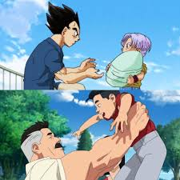

NEXVERSE
Both Vegeta and Nolan Grayson did terrible things… so why does one get forgiven and the other get endless hate?

Vegeta started as a mass murderer. No debate. He destroyed planets, killed without hesitation, and had zero remorse at first.
But over time, people forgave him. Why? Because he showed growth… and more importantly, he suffered for it.
Nolan Grayson (Omni-Man) also committed atrocities. But unlike Vegeta, his redemption feels… different to people.
He didn’t just “turn good” immediately. He still sees his past actions through a logic lens, not emotional guilt.
And that’s where the conflict comes in.
Vegeta knows he doesn’t deserve forgiveness — and that makes people accept him more.
Nolan, on the other hand, believes redemption is something earned through future actions.
Same outcome. Different mindset. Different audience reaction.
People don’t forgive characters based only on actions.
They forgive based on: - emotion - suffering - and perceived humility
And that’s why Vegeta is accepted… while Nolan is still debated.